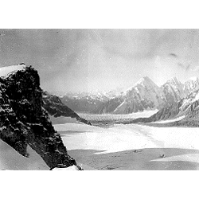
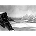
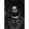

| |
|
|
|
|
|
|
 |
 |
 |
Cook was a talented photographer, both of landscapes and people. His studies of Eskimos and the South American Indians and Alaskan natives are sensitive and artistic. His pioneer photographs made in Antarctica and Alaska are of tremendous historical and artistic value, and his anthropological photographs made in 1891-1892 are a scientific treasure. Here are the repositories of the majority of Cook's photographs:
1891-1892 Anthropological studies: National Geographic Society
1893-94 Library of Congress
1897-1899 Library of Congress
1901 Library of Congress
1903-1906 Library of Congress/Ohio State University*
1907-09 Library of Congress
1915-16 Ohio State University
*some of the key 1906 pictures once held by the Cook Society were not delivered to Ohio State. Their whereabouts are unknown.
| «- Surviving original diaries | Sound recordings -» |